Ingreso Garantías
Para el ingreso de los Documentos Origen se utiliza el Manejador de Entrada Interactiva de Comprobantes del CG/Web. A continuación se hace una descripción sobre su funcionamiento.
Funciones
Esta opción engloba las siguientes funciones:
- Introducir manualmente los Comprobantes.
- Revisar, modificar, completar o suprimir los Comprobantes si no están contabilizados.
- Aprobar los Comprobantes para que puedan ser contabilizados.
- Consultar los Comprobantes.
- Contabilizar un Comprobante.
Entrada de datos
Un Comprobante se compone de Encabezado y Asientos. En primer lugar hay que definir el encabezado y luego los asientos. No hay límite para la cantidad de asientos de un encabezado, pero debe tenerse en cuenta que un Comprobante debe cuadrar para que pueda ser aprobado. Asimismo un asiento está constituido por uno o varios movimientos.
Validación de datos
La validación de los datos en CG/Web, se lleva a cabo en el momento de introducirlos. Si se detecta algún error en los datos, aparece un mensaje y el cursor se posiciona en el campo con el valor erróneo. Además, CG/Web funciona de forma que sólo pide al usuario aquellos campos habilitados para cada Cuenta en particular y le exige que los cumplimente en caso de que sean obligatorios. Con ello se reduce al mínimo la duda de los usuarios de Contabilidad:
- "¿Debo anotar aquí este dato o no?" y la del responsable de Contabilidad:
- "¿Anotarán los usuarios todos los datos que yo necesito?"
Sesión de aprobación
En un departamento contable es frecuente que existan unas personas encargadas de la introducción de la mayor parte del Comprobante, pero que están sujetas a una revisión posterior de su trabajo, por parte de una persona contablemente más experta, que debe dar su aprobación. CG/Web ofrece esta seguridad a través del concepto de APROBACIÓN.
Al seleccionar la opción de entrada de Comprobantes interactiva, aparece la pregunta: ¿ES SESIÓN DE APROBACIÓN?
- Si el usuario contesta N (NO), podrá introducir nuevos Comprobantes, pudiendo, asimismo, consultar, modificar, aprobar o contabilizar sólo los Comprobantes a los que esté autorizado.
- Si el usuario contesta S (SI), podrá consultar, modificar, aprobar o contabilizar cualquier Comprobante, siempre y cuando esté autorizado, pero no podrá introducir nuevos Comprobantes. Al aprobar un Comprobante, CG/Web muestra automáticamente el siguiente del mismo periodo que está pendiente de aprobación, obteniendo una gran rapidez y optimización de tiempo en su trabajo.
Status de Comprobante
Aprobar, rechazar y contabilizar Comprobantes son cambios de status. Un Comprobante en CG/Web puede tener los siguientes status:
No aprobado (V)
- Este Comprobante no será contabilizado si se activa el proceso de contabilización.
- Puede ser modificado o rechazado.
- Si está cuadrado puede ser aprobado.
Aprobado (A)
- Este Comprobante será contabilizado al activarse el proceso de contabilización.
- No puede ser modificado pero puede ser rechazado para modificarlo.
Contabilizado (E)
- Sus asientos ya están reflejados en los saldos de las Cuentas de Mayor y de Auxiliar correspondientes.
- No puede ser modificado en ninguno de sus campos contables (aunque sí en algunos no contables), ni eliminado bajo ninguna circunstancia.
Comprobantes que no cuadran
Sólo los Comprobantes que cuadran se pueden aprobar y sólo los Comprobantes aprobados se podrán contabilizar. Los Comprobantes pueden no cuadrar porque:
- Un importe es incorrecto.
- Falta un movimiento
- Sobra un movimiento.
Corregir errores
Ocasionalmente puede ocurrir que un Comprobante se apruebe o rechace por error. Para resolver estas situaciones CG/Web tiene las siguientes facilidades:
- Un Comprobante aprobado puede ser rechazado.
- Se permite modificar el contenido de un Comprobante rechazado.
- Un Comprobante rechazado puede ser aprobado.
Autorizaciones
Las autorizaciones necesarias para poder acceder a esta opción son varias y dependen de cuál es la acción que se desea realizar. Para poder entender más fácilmente la combinación de autorizaciones que intervienen en está opción, deberá revisar el MANUAL DEL USUARIO DE CONTABILIDAD capítulo 4.1 USUARIOS Y AUTORIZACIONES.
Al ingresar a esta opción se despliega la pantalla donde se ingresa el código de en la que se van a introducir, consultar o modificar Comprobantes así como la modalidad de la sesión, como muestra 3.11.
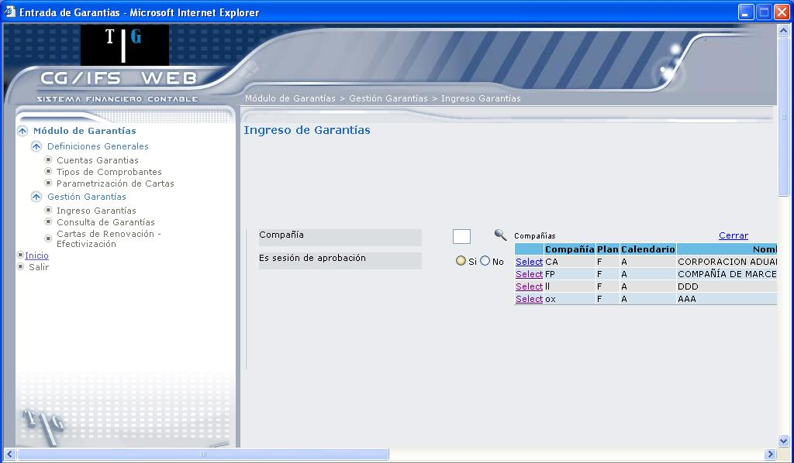
Figura 3. Ingreso Garantías.
Compañía:
Digite el código de la compañía o presione el icono el mismo que despliega la lista de compañías como indica la flecha 1, de 3.11.
Es sesión de aprobación:
Marcar el casillero 'Si' si se van a aprobar o modificar Comprobantes existentes (no podrán introducirse nuevos Comprobantes).
Marque el casillero 'No' si se van a introducir nuevos Comprobantes. En este caso, si el usuario está autorizado, pueden modificarse o aprobarse los Comprobantes ya existentes.
Si en el campo “es sesión de aprobación”, se indica “No”, aparece la pantalla que muestra 3.12.
Sesión de Aprobación “No”
Al seleccionar esta opción el usuario podrá seleccionar si desea o no Adicionar nuevos comprobantes, como se muestra en 3.12.
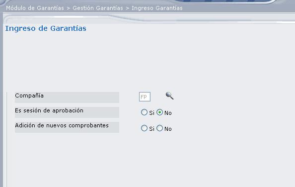
Figura 3. Adición de nuevos comprobantes.
Adición de nuevos Comprobantes (Si)
Si en adición de nuevos comprobantes selecciona la opción `Si`, se despliega la pantalla que muestra 3.13, que permitirá registrar el encabezado de un nuevo comprobante.
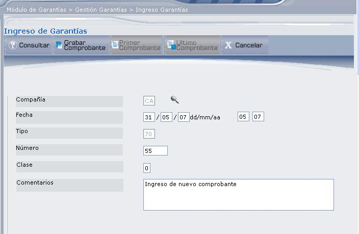
Figura 3. Adición de nuevos comprobantes - Si.
Compañía:
Despliega el código de la compañía que seleccionó en la pantalla anterior, en la cual se va a ingresar un nuevo comprobante.
Fecha:
Digite la fecha del comprobante, en el formato: dd/mm/aa, en los casilleros de junto se digita el periodo, en formato mm/aa.
Tipo:
Despliega el tipo de comprobante que se va a registrar.
Número:
Digite el número de comprobante que desea registrar.
Clase
Clase de Comprobante. Este campo depende de la moneda que use la compañía.
- Digite 0, si no usa Moneda Extranjera a nivel de Plan de Cuentas.
- Digite 1, si se introducen todos los importes en Moneda Local.
- Digite 2, si se introducen todos los importes en Moneda Extranjera. Esta clase de comprobante no admite movimientos IVA.
- Digite 3, si se introducen todos los importes en ambas monedas. En este caso el usuario es el responsable de cuadrar el comprobante en las dos monedas.
Comentarios:
Permite ingresar un comentario con respecto al comprobante que está ingresando.
Una vez que haya ingresado toda esta información, presione el botón Grabar Comprobante.
BOTONES


La pantalla que muestra 3.14, se ha dividido en tres secciones, para una mejor explicación.
SECCIÓN 1:
Despliega información referente al encabezado del comprobante, como: código de compañía, código del tipo de comprobante, número de comprobante, año contable, periodo contable, fecha en la que se ingresó el comprobante y clase de comprobante. También presenta en la parte superior los botones de navegación () que permiten ir de un comprobante a otro.
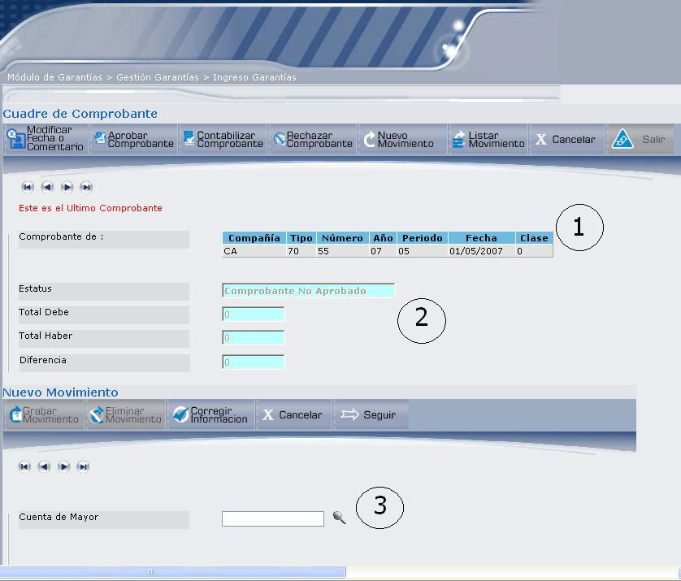
Figura 3. Ingresar movimientos.
BOTONES


SECCIÓN 2:
Status:
Despliega el estado que tiene el comprobante que se visualiza; dichos estados pueden ser los siguientes: no aprobado, aprobado, Contabilizado o Rechazado.
Total Debe: Total Haber:
Permite verificar que el comprobante cuadre, aquí se ingresan los valores de los movimientos que ingrese.
Diferencia:
Despliega la diferencia que existe entre ambas cuentas, para que el comprobante cuadre debe desplegar el valor cero.
SECCIÓN 3:
La información que debe ingresar es la siguiente:
Cuenta de Mayor:
Se ingresa la cuenta de mayor correspondiente al movimiento. Si conoce el código, digítelo y presione la tecla ENTER; caso contrario, de clic en el ícono (), mismo que despliega una lista de cuentas. Seleccione la cuenta dando clic en el vínculo Select. Una vez que seleccione la cuenta, se desplegarán los campos que muestra 3.15.
Proveedores:
Seleccione el proveedor a quien se le registra en el movimiento, dando clic en el icono ().
Compañía de Seguros:
Seleccione la compañía de Seguros dando clic en el ícono ( ), el mismo que despliega la lista de Compañías de Seguros. Escoja dando clic en el vínculo Select.
), el mismo que despliega la lista de Compañías de Seguros. Escoja dando clic en el vínculo Select.
Tipo de Garantía:
Seleccione el tipo de garantía que desea registrar, dando clic en el icono ().
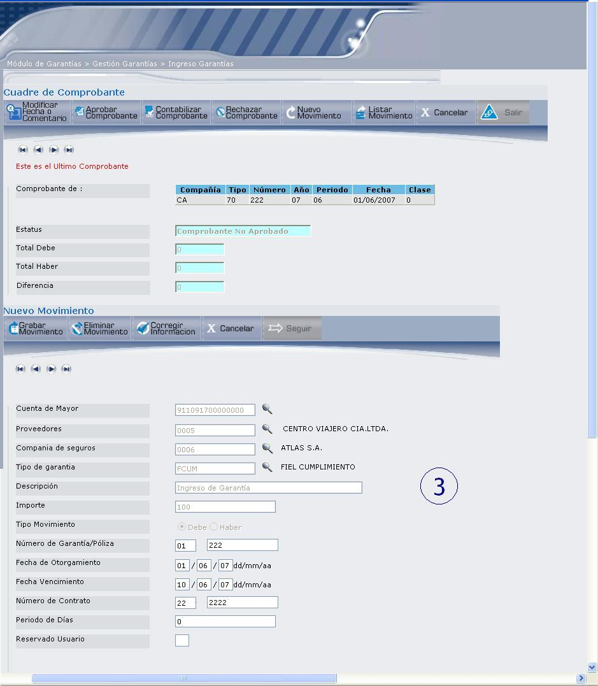
Figura 3. Ingresar nuevo movimiento.
Descripción:
Ingrese la descripción del movimiento.
Cuenta de Auxiliar:
(Sólo aparece si de Mayor utiliza Tipo de Auxiliar).
Anotar el código de de Auxiliar que se verá afectada por el movimiento.
Descripción: (opcional)
Anotar la descripción del movimiento.
Importe:
Digite el valor que se asigna al movimiento y presione la tecla ENTER o el botón Seguir.
Tipo Movimiento:
Indica a que tipo de movimiento se asigna la cuenta. Por omisión se muestra marcado el casillero Debe.
Número de Garantía / Póliza:
Digite el número de garantía o póliza que está registrando. Aquí puede observarse dos campos, en el primero se ingresa cualquier tipo de documento que haga referencia al documento que está registrando y en el segundo se digita el número de documento.
Fecha de Otorgamiento:
Digite la fecha que se registró el documento de garantía, en el formato dd/mm/aa.
Fecha Vencimiento:
Digite la fecha de vencimiento de la garantía, en el formato dd/mm/aa.
Número de Contrato: (opcional)
Obligatorio si la cuenta lo requiere. Digite el número de documento que identificará al contrato.
Periodo de Días:
Digite los días plazo.
Reservado Usuario: (opcional)
Se puede utilizar este campo para una clasificación adicional.
A continuación presione la tecla ENTER o el botón Grabar Movimiento.
BOTONES
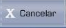
Adición de nuevos comprobantes (No):
Si en adición de nuevos comprobantes selecciona la opción `No`, se despliega la pantalla que muestra 3.16.
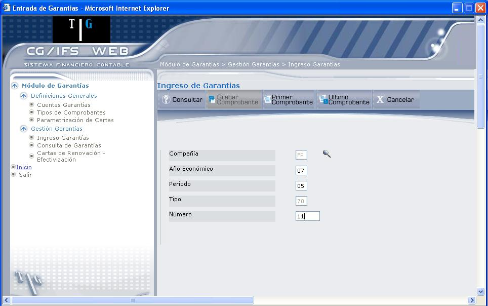
Figura 3. Consultar Comprobantes – Adición de nuevos Comprobantes NO.
Compañía:
Despliega el código de la compañía en la que va a consultar los comprobantes. Únicamente con este dato podrá consultar los comprobantes de dicha compañía, presionando los botones Primer Comprobante ó Ultimo Comprobante.
Los siguientes campos permiten una consulta más específica del comprobante que desee actualizar o cambiar de estado.
Año Económico:
Digite el año en el que se registra el comprobante. Debe digitar los dos últimos dígitos del año. Por ejemplo: año: 2007, se digita 07.
Periodo:
Digite el periodo de registro del comprobante, este periodo no debe corresponder a un periodo cerrado.
Tipo:
Se despliega automáticamente el tipo de comprobante.
Número:
Digite el número de comprobante.
A continuación presione el botón Consultar o la tecla ENTER, que comprueba si el comprobante ya existe, si es así, pasa a la pantalla de movimientos donde podrá consultar y/o modificar el comprobante, mediante la pantalla que muestra 3.18. Caso contrario si no existe se ingresa como un nuevo comprobante, en donde debe ingresar los campos que presenta 3.17.
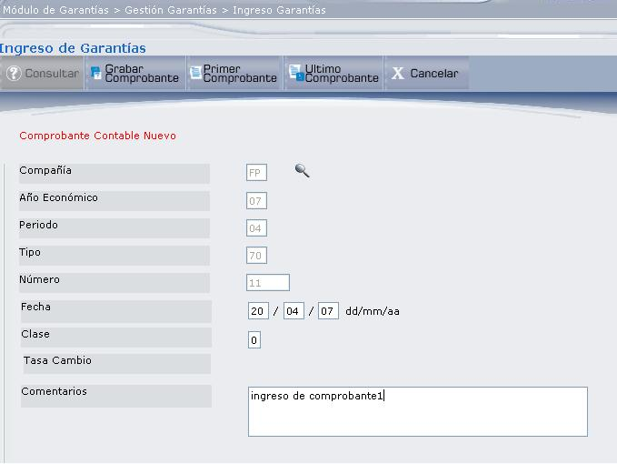
Figura 3. Ingreso Comprobante.
Fecha:
Digite la fecha del comprobante que va a ingresar, en formato: dd/mm/aa.
Clase
Clase de Comprobante. Este campo depende de la moneda que use la compañía.
- Digite 0, si no usa Moneda Extranjera a nivel de Plan de Cuentas.
- Digite 1, si se introducen todos los importes en Moneda Local.
- Digite 2, si se introducen todos los importes en Moneda Extranjera. Esta clase de comprobante no admite movimientos IVA.
- Digite 3, si se introducen todos los importes en ambas monedas. En este caso el usuario es el responsable de cuadrar el comprobante en las dos monedas.
Tasa Cambio: (opcional)
Aparece el importe de la tasa de cambio correspondiente al tipo de moneda asignada al Plan de Cuentas que utiliza no usa Moneda Extranjera a nivel de Plan de Cuentas y se anota 1 o 2 en el campo clase de Comprobante, este campo puede modificarse.
Comentarios:
Permite ingresar un comentario con respecto al comprobante que está ingresando. Y por último presione el botón Grabar Comprobante.
BOTONES
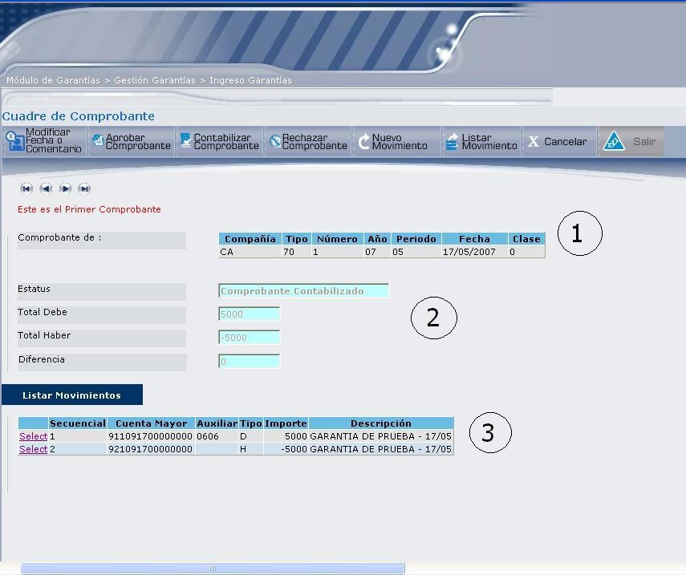
Figura 3. Ingreso Comprobantes.
3.18, se ha dividido en tres secciones, las mismas que se explican a continuación:
SECCIÓN 1:
Despliega información referente al encabezado del comprobante, como: código de compañía, código del tipo de comprobante, número de comprobante, año contable, periodo contable, fecha en la que se ingresó el comprobante y clase de comprobante. También presenta en la parte superior los botones de navegación () que permiten ir de un comprobante a otro.
BOTONES
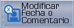


SECCIÓN 2:
Status:
Despliega el estado que tiene el comprobante que se visualiza; dichos estados pueden ser los siguientes: No Aprobado, Aprobado, Contabilizado o Rechazado.
Total Debe: , Total Haber:
Permite verificar que el comprobante cuadre, aquí se ingresan los valores de los movimientos que ingrese.
Diferencia:
Despliega la diferencia que existe entre ambas cuentas, para que el comprobante cuadre debe desplegar el valor cero.
SECCIÓN 3:
Presenta los movimientos ingresados, si desea actualizar uno de ellos, de clic en el vínculo Select, que despliega el detalle del movimiento, como muestra 3.19.
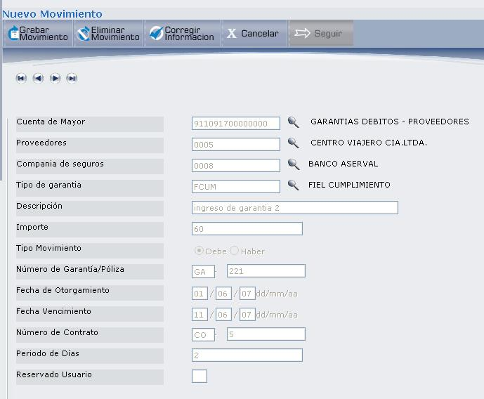
Figura 3. Actualización de Comprobante.
Siempre y cuando el comprobante no se encuentre contabilizado, podrá modificar o eliminar presionando el botón Corregir Información o Eliminar Movimiento respectivamente.
3.20, se presenta la información cumplimentada de la siguiente manera: en Sesión de Aprobación se ha marcado el casillero ‘Si’, en Adición de Nuevos Comprobantes se ha indicado ‘No’. Está opción permite seleccionar un Comprobante existente, cualquiera que sea su status.
La descripción de la pantalla representada en 3.20, se encuentra en la pantalla de Adición de Nuevos Comprobantes “No”, Figura 3.16.
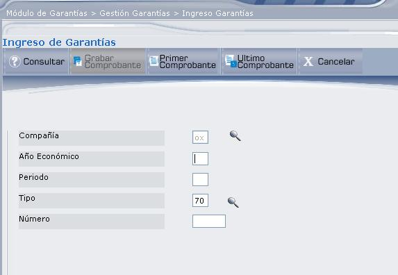
Figura 3. Ingreso Comprobantes.
Created with the Personal Edition of HelpNDoc: Full-featured Documentation generator